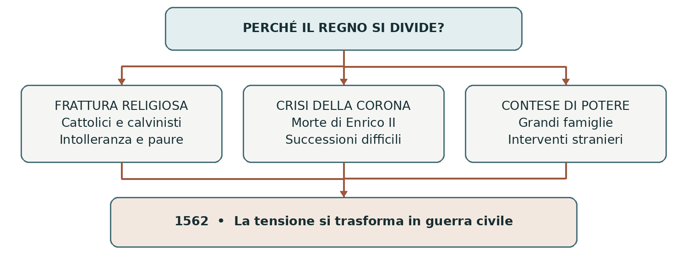
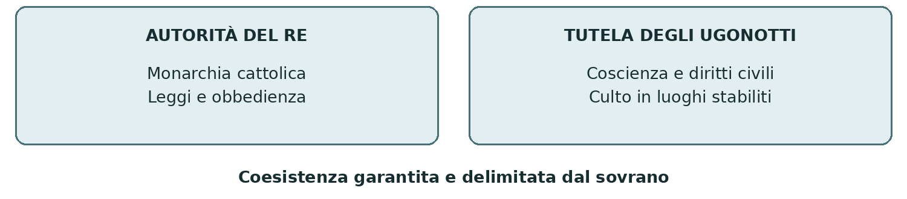
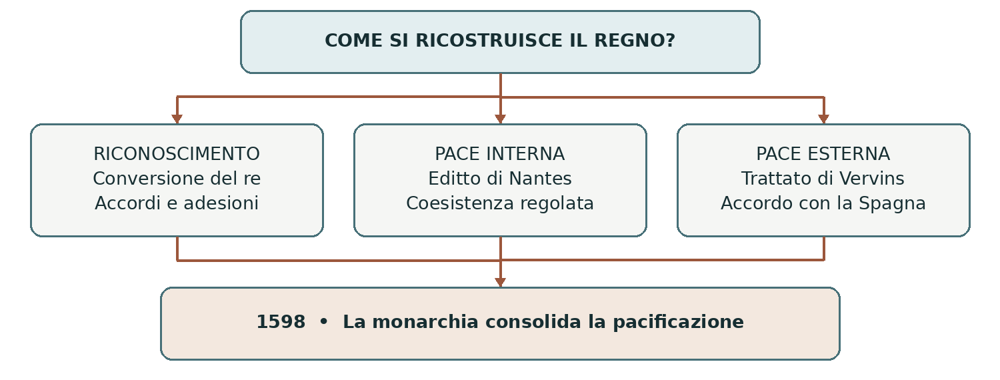

L’EUROPA NELL’ETÀ DELLA RIFORMA
Le guerre di religione
in Francia
Fede, guerra civile e ricostruzione della monarchia
Tra il 1562 e il 1598 la Francia fu attraversata da una serie di guerre civili, tradizionalmente distinte in otto guerre di religione. Combattimenti, massacri e assedi si alternarono a trattative e pacificazioni. Il conflitto oppose cattolici e protestanti, ma coinvolse anche il controllo della corona, le ambizioni delle grandi famiglie e gli equilibri europei.
0 Domanda generatrice
Come si può mantenere unito un regno i cui sudditi professano fedi diverse? Nel Cinquecento molti ritenevano che l’unità politica richiedesse una sola religione. La diffusione del protestantesimo mise in crisi questa convinzione. Il percorso che portò all’editto di Nantes fu una risposta concreta a un problema drammatico: interrompere la violenza senza aver ricostituito l’unità religiosa.
1 Il mondo precedente: una monarchia cattolica
La monarchia francese si presentava come custode della fede cattolica. L’incoronazione aveva un carattere sacro e la Chiesa occupava un posto centrale nella società: scandiva il calendario, amministrava sacramenti e beni, organizzava scuole e assistenza. Per molti contemporanei, quindi, una divisione religiosa minacciava insieme la salvezza delle anime e l’ordine della comunità.
Il regno, tuttavia, non era governato in modo uniforme. Nobili, città, magistrature e province disponevano di privilegi e autonomie. Il re doveva ottenere obbedienza attraverso funzionari, accordi e rapporti personali. Le grandi famiglie aristocratiche potevano mobilitare uomini armati e reti di fedeltà: quando la corte si divise, queste risorse contribuirono a estendere lo scontro.
Dagli anni Venti del Cinquecento si diffusero le idee della Riforma. In seguito acquisì particolare forza il calvinismo, legato alla predicazione di Giovanni Calvino e all’esperienza di Ginevra. I protestanti francesi, chiamati ugonotti, rimasero una minoranza, ma organizzarono comunità e trovarono sostegno anche fra nobili e abitanti delle città.
In sintesi L’unità religiosa era considerata un fondamento dell’ordine politico. La presenza di comunità riformate pose alla monarchia una scelta difficile fra repressione e convivenza regolata.
2 Le fratture: dalla crisi dinastica alla guerra
1559: la morte di Enrico II
Nel 1559 Enrico II morì per le ferite riportate in un torneo. La sua scomparsa indebolì il centro politico del regno. Gli succedettero, uno dopo l’altro, tre figli della dinastia Valois. Nessuno lasciò un erede maschio che potesse continuare la linea regnante.
Sovrano | Regno | Il problema politico |
|---|---|---|
Francesco II | 1559–1560 | Regna giovanissimo; i Guisa, parenti della moglie Maria Stuart, esercitano grande influenza. |
Carlo IX | 1560–1574 | Sale al trono minorenne. La madre Caterina de’ Medici è reggente dal 1560 al 1563 e mantiene poi un ruolo decisivo. |
Enrico III | 1574–1589 | Diventa re da adulto. Deve difendere l’autorità della corona contro coalizioni armate rivali. |
La reggenza è il governo esercitato in nome di un sovrano che non può governare personalmente, per esempio perché minorenne. L’influenza politica di Caterina durò più a lungo della sua reggenza formale: le due cose non coincidono. La regina madre cercò soprattutto di conservare l’autorità della monarchia e la continuità della dinastia.
1562: un tentativo di accordo e una strage
Nel gennaio 1562 un editto concesse ai riformati possibilità limitate di celebrare il culto. La scelta incontrò forti opposizioni. Il 1° marzo, a Wassy, uomini al seguito di Francesco di Guisa massacrarono fedeli protestanti riuniti per il culto. L’episodio viene assunto come inizio delle guerre di religione: le precedenti tensioni sfociarono nella mobilitazione di eserciti e nel controllo armato delle città.

In sintesi La guerra nacque dall’intreccio fra divisione confessionale, difficoltà della corona e competizione politica. La diversità religiosa, da sola, non rendeva inevitabile il conflitto.
3 Attori, gruppi e conflitti
Le appartenenze religiose furono importanti, ma non produssero due schieramenti sempre compatti. Un cattolico poteva sostenere il re contro altri cattolici; un principe protestante poteva cercare un accordo con la corona. Le alleanze cambiarono nel corso dei decenni.
Attori | Posizione e obiettivi |
|---|---|
La corona e Caterina de’ Medici | Difendere il potere regio, evitare lo smembramento del regno, contenere le fazioni. La politica alterna accordi e repressione. |
I Guisa | Famiglia di grandi nobili, protagonista del fronte cattolico intransigente. Francesco e poi suo figlio Enrico sono figure diverse, attive in fasi successive. |
I capi ugonotti | Luigi di Borbone, principe di Condé, l’ammiraglio Gaspard de Coligny e, più tardi, Enrico di Borbone, re di Navarra. Coligny appartiene alla famiglia Châtillon. |
Le comunità locali | Nobili, artigiani, mercanti e popolazioni urbane partecipano con motivazioni e intensità diverse. Il conflitto non si svolge soltanto a corte. |
I sostenitori della pacificazione | Fra i cosiddetti politiques, anche cattolici ritengono prioritario salvare il regno e l’autorità civile, accettando una coesistenza religiosa. |
Le potenze straniere | Spagna e papato sostengono cause e forze cattoliche; l’Inghilterra e principi protestanti aiutano gli ugonotti in varie fasi. Contano anche interessi strategici. |
Una fede vissuta, un conflitto politico
Per i fedeli erano in gioco verità religiose ritenute decisive: il valore della messa, il culto delle immagini, l’autorità del papa, il modo di leggere la Bibbia. La distruzione di immagini sacre da parte di riformati poteva apparire ai cattolici un attacco all’intera comunità. Le persecuzioni e i massacri rafforzavano a loro volta, fra gli ugonotti, la convinzione di dover difendere la propria fede e la propria sopravvivenza.
La religione non fu dunque un semplice pretesto. Al tempo stesso, il linguaggio della fede poteva legittimare lotte per incarichi, territori e influenza. Non tutti i Borbone furono protestanti, né tutti i cattolici sostennero i Guisa. Le differenze interne ai gruppi aiutano a capire perché si formarono alleanze apparentemente contraddittorie.
In sintesi Per seguire le guerre occorre distinguere confessione religiosa, fedeltà dinastica e interessi politici. Il rapporto fra queste tre dimensioni cambia nel tempo.
4 Il processo storico: guerre e paci fragili
1562–1570: nessuna vittoria risolve il conflitto
La prima guerra si concluse nel 1563, ma la pace non eliminò le diffidenze. Nuovi scontri scoppiarono nel 1567 e nel 1568. Le forze cattoliche e regie ottennero importanti vittorie, fra cui Jarnac e Moncontour nel 1569; tuttavia gli ugonotti conservarono basi territoriali, comandanti e collegamenti con alleati esterni. Vincere una battaglia non significava rendere impossibile la ripresa della guerra.
Le pacificazioni cercavano di stabilire dove i riformati potessero celebrare il culto e come proteggerne le persone. Queste concessioni erano contestate da chi riteneva inaccettabile la presenza di due confessioni. Gli accordi potevano inoltre essere applicati male o violati a livello locale. La paura di un nuovo attacco spingeva i gruppi a conservare armi e piazzeforti, alimentando la diffidenza reciproca.
Il conflitto pesava sulle popolazioni: eserciti da rifornire, campi devastati, commerci interrotti, imposte e requisizioni. La violenza poteva colpire anche persone disarmate, beni e luoghi di culto. Essa coinvolse entrambi i campi, con episodi, dimensioni e responsabilità da ricostruire di volta in volta. Una guerra civile trasforma spesso rapporti di vicinato in rapporti di sospetto.
La pace di Saint-Germain del 1570
La pace di Saint-Germain, nell’agosto 1570, riconobbe agli ugonotti diritti religiosi delimitati e concesse per un periodo stabilito quattro piazze di sicurezza, fra cui La Rochelle. Si trattava di città affidate alla loro custodia come garanzia: dopo tante violenze, una promessa non sembrava sufficiente senza strumenti di protezione.
L’ammiraglio Coligny tornò a esercitare influenza presso Carlo IX. Sostenne un intervento contro la Spagna nei Paesi Bassi, dove era in corso una rivolta contro Filippo II. Una simile scelta poteva spostare all’esterno il conflitto, ma rischiava di coinvolgere la Francia in una guerra impegnativa. A corte si contrapposero valutazioni e interessi diversi.
Perché trattare? | Perché la pace resta fragile? |
|---|---|
Esaurimento delle risorse e impossibilità di eliminare l’avversario. | Ostilità religiosa, vendette e timore di tradimenti. |
Esigenza della corona di riprendere il controllo del regno. | Resistenze dei capi e difficoltà di far rispettare gli accordi nelle città. |
In sintesi Le concessioni agli ugonotti rispondevano a rapporti di forza e problemi di governo. La pacificazione del 1570 aprì una possibilità di convivenza, presto travolta dalla crisi del 1572.
La notte di San Bartolomeo
Agosto 1572: dalla riconciliazione al massacro
Il 18 agosto 1572 Enrico di Navarra, protestante, sposò Margherita di Valois, sorella di Carlo IX e figlia di Caterina. Il matrimonio avrebbe dovuto favorire la riconciliazione. Per le nozze molti nobili ugonotti giunsero a Parigi, città in cui era forte l’ostilità verso i riformati.
Il 22 agosto Coligny fu ferito in un attentato. Le responsabilità e le intenzioni dei diversi protagonisti della crisi sono oggetto di discussione storica. L’attacco provocò paura e richieste di giustizia. Nel vertice della monarchia maturò la decisione di eliminare i principali capi ugonotti: Carlo IX autorizzò l’azione, con il coinvolgimento del consiglio regio e di Caterina.
Nella notte fra il 23 e il 24 agosto, festa di san Bartolomeo, Coligny e altri dirigenti protestanti furono uccisi. Alla strage dei capi seguì una violenza molto più ampia contro gli ugonotti della città. Le uccisioni continuarono nei giorni successivi e si estesero, nelle settimane seguenti, a diverse città di provincia. Le vittime furono migliaia; le stime precise restano incerte.
Momento | Che cosa accade | Significato |
|---|---|---|
18 agosto | Nozze di Enrico e Margherita. | Tentativo di riconciliazione dinastica e religiosa. |
22 agosto | Attentato contro Coligny. | La tensione e il timore di rappresaglie aumentano. |
23–24 agosto | Uccisione dei capi ugonotti autorizzata dal re. | La corona partecipa direttamente alla violenza. |
Giorni e settimane seguenti | Massacri a Parigi e in altre città. | La strage coinvolge comunità e autorità locali. |
Le conseguenze politiche
Enrico di Navarra sopravvisse e fu costretto a convertirsi al cattolicesimo; dopo essersi sottratto al controllo della corte, nel 1576 tornò al protestantesimo. Molti riformati fuggirono o abbandonarono pubblicamente la loro fede. Altri organizzarono la resistenza, soprattutto nell’ovest e nel sud del regno.
La fiducia nella protezione del sovrano subì un colpo gravissimo. Come riconoscere l’autorità di un re che aveva autorizzato l’uccisione di dirigenti del proprio partito? La repressione non ristabilì l’unità: la guerra riprese. È riduttivo descrivere l’intero massacro come l’esecuzione lineare di un piano preparato da tempo; è altrettanto scorretto cancellare la responsabilità del potere regio.
In sintesi San Bartolomeo segnò la rottura della pacificazione. Per comprenderlo occorre distinguere la decisione contro i capi dalla diffusione del massacro, senza separarne le responsabilità politiche.
La crisi della successione e i tre Enrichi
1584: un erede protestante per una corona cattolica
Alla morte di Carlo IX nel 1574 salì al trono Enrico III. Il re non aveva figli. Nel 1584 morì anche il fratello minore Francesco, duca d’Angiò: a quel punto l’erede dinastico divenne Enrico di Borbone, re di Navarra, discendente dei Capetingi per linea maschile.
Il suo diritto non derivava dal matrimonio con Margherita di Valois. Il vincolo matrimoniale aveva un valore politico, mentre la successione dipendeva dalla discendenza dinastica. Il fatto che l’erede fosse protestante pose un problema esplosivo: doveva prevalere la continuità ereditaria oppure l’appartenenza cattolica del futuro sovrano?
La Lega cattolica, rilanciata sotto la guida di Enrico di Guisa e sostenuta dalla Spagna, rifiutava un re protestante. La fase aperta nel 1585 è nota come guerra dei tre Enrichi. I protagonisti non guidavano tre confessioni: due erano cattolici, ma si scontravano sulla direzione politica del regno.
Protagonista | Posizione | Obiettivo |
|---|---|---|
Enrico III di Valois | Re di Francia, cattolico. | Conservare l’autorità monarchica e sottrarsi al controllo della Lega. |
Enrico di Guisa | Capo cattolico intransigente. | Impedire una successione protestante e condizionare il governo. |
Enrico di Navarra | Capo ugonotto ed erede dinastico. | Difendere il proprio partito e il diritto alla corona. |
1588–1589: due assassinii cambiano il regno
Nel 1588 la mobilitazione della Lega costrinse Enrico III a lasciare Parigi. In dicembre il re fece assassinare Enrico di Guisa, a Blois, e colpì anche altri esponenti della famiglia. La decisione aggravò il conflitto con i cattolici intransigenti. Per recuperare il controllo del regno, il sovrano si alleò con Enrico di Navarra.
Nel 1589 il frate Jacques Clément, vicino alla causa della Lega, ferì mortalmente Enrico III. Con la sua morte terminò la dinastia regnante dei Valois. Enrico di Navarra divenne Enrico IV, primo re di Francia della dinastia dei Borbone. Una parte dei cattolici sostenne la successione legittima; la Lega e altre forze continuarono a rifiutarla.
In sintesi La guerra civile diventò anche una crisi di legittimità. Enrico IV ereditò il titolo di re nel 1589, ma dovette ancora ottenere l’obbedienza di gran parte del regno.
Enrico IV: diventare il re riconosciuto
Dalla successione alla conquista del consenso
Enrico IV non era soltanto il candidato degli ugonotti. Poteva contare anche su cattolici fedeli al principio dinastico o contrari al peso della Spagna nella politica francese. Tuttavia Parigi e importanti territori erano controllati dai suoi avversari. Essere l’erede legittimo non bastava a governare.
Le vittorie militari, fra cui Ivry nel 1590, rafforzarono la sua posizione, senza chiudere il conflitto. Il re affiancò alle armi trattative, concessioni e accordi con città e grandi nobili. I cattolici ostili a un sovrano protestante non potevano essere ricondotti all’obbedienza soltanto con la forza.
Nel 1593 Enrico IV si convertì al cattolicesimo a Saint-Denis. Fu una svolta decisiva per ampliare il riconoscimento della sua autorità. La conversione ebbe un chiaro significato politico; questo non consente di ricostruire con certezza le convinzioni interiori del sovrano. La frase “Parigi val bene una messa”, comunemente attribuitagli, non va usata come una sua dichiarazione sicuramente documentata.
Data | Passaggio | Effetto |
|---|---|---|
1589 | Successione a Enrico III. | Enrico IV è re, ma l’obbedienza del regno è divisa. |
1593 | Conversione al cattolicesimo. | Si riduce un ostacolo centrale al riconoscimento cattolico. |
1594 | Incoronazione a Chartres e ingresso a Parigi. | La monarchia recupera un centro politico decisivo. |
1595 | Assoluzione di papa Clemente VIII. | Si consolida il riconoscimento religioso del sovrano. |
1598 | Editto di Nantes e pace di Vervins. | Si stabilizzano la pacificazione interna e i rapporti con la Spagna. |
Due paci diverse, nello stesso anno
Nell’aprile 1598 l’editto di Nantes regolò la convivenza religiosa all’interno del regno. Il 2 maggio 1598 la pace di Vervins chiuse la guerra con la Spagna. Non erano lo stesso provvedimento: il primo riguardava i sudditi e le loro garanzie, il secondo i rapporti fra monarchie. Anche la resa degli ultimi grandi oppositori favorì la pacificazione.
Non tutti i conflitti esterni terminarono contemporaneamente: il contrasto con il ducato di Savoia si concluse con il trattato di Lione del 1601. La ricostruzione dell’autorità di Enrico IV fu quindi un processo, non l’effetto immediato di un solo gesto.
In sintesi La monarchia si consolidò combinando legittimità dinastica, forza militare, conversione e negoziati. Il problema religioso richiedeva ancora regole per vivere insieme.
L’editto di Nantes: convivere senza uniformità
L’editto di Nantes, promulgato da Enrico IV nell’aprile 1598, diede una sistemazione più stabile alla coesistenza fra cattolici e ugonotti. Riprese anche soluzioni già sperimentate nei precedenti accordi. La sua forza dipendeva dalla capacità della monarchia di imporne il rispetto dopo decenni di guerre.
Quali diritti furono riconosciuti?
Agli ugonotti fu riconosciuta la libertà di coscienza: non dovevano essere costretti a rinunciare alla fede riformata. Diversa era la libertà di culto, cioè la possibilità di celebrare pubblicamente i riti e riunirsi come comunità: il culto protestante era consentito soltanto nei luoghi e nelle condizioni stabiliti, ed era vietato a Parigi.
Furono inoltre garantiti l’accesso agli incarichi pubblici e tutele giudiziarie. Accordi complementari mantennero per un periodo determinato alcune piazze di sicurezza con guarnigioni ugonotte. Queste garanzie rispondevano alla paura di nuove persecuzioni e alla necessità di rendere credibile la pace.
Ambito | Soluzione | Limite da ricordare |
|---|---|---|
Coscienza | Tutela della professione della fede riformata. | Non è proclamata una libertà universale per ogni religione. |
Culto pubblico | Consentito in luoghi e condizioni definiti. | Non è autorizzato liberamente in tutto il regno. |
Vita civile | Accesso a cariche e protezioni giudiziarie. | La società conserva ordini, privilegi e disuguaglianze. |
Sicurezza | Piazzeforti e garanzie concordate. | Le concessioni militari hanno termini e condizioni. |
Un compromesso, non uno Stato laico
Il cattolicesimo conservava una posizione preminente e il sovrano restava cattolico. Le due confessioni non erano poste sullo stesso piano in ogni aspetto della vita pubblica. L’editto, però, riconosceva che un suddito potesse rimanere protestante e obbedire legittimamente al re: l’unità politica non richiedeva più, nell’immediato, la cancellazione della minoranza religiosa.

In sintesi La pace fu costruita attraverso diritti delimitati e garanzie concrete. Questa tolleranza politica va compresa nel suo contesto, senza identificarla con la libertà religiosa contemporanea.
5 Fonti in dialogo: leggere le regole della pace
Un documento normativo permette di conoscere ciò che un’autorità ordina. Da solo, però, non dimostra che tutte le disposizioni siano state applicate ovunque. Leggiamo due passaggi dello stesso provvedimento e mettiamoli in relazione: ciò che il re concede aiuta a capire anche ciò che limita.
Documento: Enrico IV, editto di Nantes, aprile 1598
Tipo di fonte: atto del potere regio. Destinatari: autorità e sudditi del regno. Scopo: pacificare il conflitto e stabilire condizioni di coesistenza. I testi qui sotto sono parafrasi didattiche, non citazioni letterali. Gli articoli sono indicati per permettere il confronto con il documento originale.
A • Articolo VI | B • Articoli XIII e XIV |
|---|---|
Gli appartenenti alla religione riformata possono vivere nel regno senza essere molestati o costretti, per motivi di coscienza, ad agire contro la propria religione. | L’esercizio della religione riformata è vietato fuori dai luoghi e dai casi autorizzati. Il culto è escluso dalla corte, da Parigi e da un’area attorno alla città. |
Fonte consultabile: Édit de Nantes, artt. VI, XIII–XIV, edizione digitale di Nicole Dufournaud, Les Classiques des sciences sociales, pp. 8 e 10 (classiques.uqam.ca, sezione Henri IV). Il manoscritto dell’editto è conservato agli Archives nationales francesi; il portale dell’Assemblée nationale ne presenta una riproduzione e una scheda.
Come interrogare il documento
Il passaggio A protegge il rapporto fra la persona e la sua convinzione religiosa; il passaggio B regola le manifestazioni collettive della fede nello spazio pubblico. Le due disposizioni non sono un errore del legislatore: esprimono il compromesso voluto dalla monarchia, che riconosce una minoranza e al tempo stesso ne delimita l’organizzazione visibile.
Anche il linguaggio rivela una gerarchia. Nel testo i riformati sono designati come appartenenti alla religione “pretesa riformata”: la formula proviene da un’autorità cattolica e non è una denominazione neutrale. Una norma può dunque concedere diritti a un gruppo senza condividerne la dottrina o equipararlo pienamente alla confessione dominante.
Domanda | Indizio da cercare |
|---|---|
1. Quale differenza c’è tra credere e celebrare pubblicamente il culto? | Confronta l’oggetto della tutela in A con l’oggetto del divieto in B. |
2. La fonte dimostra l’esistenza di una completa uguaglianza religiosa? | Individua condizioni, luoghi esclusi e linguaggio usato. |
3. Come verificare se l’editto fu rispettato? | Servirebbero altre fonti: sentenze, ricorsi, registri locali e testimonianze. |
In sintesi Una fonte va letta considerando autore, scopo e limiti. Il confronto fra gli articoli mostra il carattere regolato e diseguale della coesistenza del 1598.
6 Conseguenze e nuovo assetto
Ricomporre una società ferita
Le guerre lasciarono distruzioni, debiti e memorie di persecuzione. La pace rese possibile riprendere attività agricole e commerci, riordinare le finanze e ricostruire i rapporti fra corona e poteri locali. Enrico IV cercò di rafforzare l’amministrazione e le risorse del regno, anche con il contributo del ministro Sully. La ripresa richiese tempo e non cancellò le differenze sociali.
La monarchia uscì dalla crisi come garante della pacificazione. L’autorità del sovrano poteva presentarsi come necessaria per impedire che le fazioni distruggessero il regno. Questo contribuì al rafforzamento del potere centrale, senza produrre subito uno Stato capace di controllare ogni provincia nello stesso modo. Nobili, città e magistrature continuarono a pesare sulle decisioni.

7 Conclusione: la risposta alla domanda iniziale
Il regno fu ricomposto distinguendo, entro limiti precisi, l’obbedienza politica dall’identità confessionale. Gli ugonotti poterono essere riconosciuti come sudditi fedeli senza essere obbligati a diventare cattolici. La monarchia non rinunciò alla propria identità religiosa, ma assunse la funzione di arbitro di una coesistenza controllata.
L’esito non era scritto nel 1562: dipese da equilibri militari, decisioni dei protagonisti, esaurimento delle risorse e negoziati. La pace non cancellava le convinzioni antagoniste; offriva norme e garanzie per impedire che ogni differenza tornasse a trasformarsi in guerra.
Sintesi finale
Le guerre iniziarono dentro una monarchia indebolita e una società divisa dalla Riforma.
Le rivalità nobiliari e gli interventi stranieri ampliarono il conflitto.
San Bartolomeo distrusse la fiducia nella pacificazione del 1570.
La crisi dinastica portò al trono Enrico IV di Borbone nel 1589.
Conversione, accordi e vittorie gli permisero di farsi riconoscere.
Nantes e Vervins consolidarono nel 1598 la pace interna ed esterna.
La tolleranza rimase limitata e affidata alla volontà del potere regio.
Uno sguardo oltre il 1598
La parte finale della traccia apre una nuova fase della storia francese. Per non confonderla con le guerre del Cinquecento, occorre distinguerne sovrani, tempi e problemi. La pace di Nantes fu un passaggio decisivo, ma non rese irreversibile la convivenza.
Da Enrico IV a Luigi XIII
Nel 1610 Enrico IV fu assassinato da François Ravaillac. Gli succedette il figlio Luigi XIII, ancora bambino: la madre Maria de’ Medici esercitò la reggenza durante la minorità, fino al 1614, conservando poi influenza politica. Maria de’ Medici e Caterina de’ Medici sono due persone diverse, appartenenti a generazioni diverse.
Il cardinale Richelieu divenne il principale ministro di Luigi XIII nel 1624. Non fu il reggente di Luigi XII. Il suo governo mirò a rafforzare l’autorità monarchica all’interno e a contrastare la potenza degli Asburgo all’esterno. Questo secondo obiettivo poteva condurre la Francia cattolica ad allearsi con potenze protestanti.
Le garanzie ugonotte e la loro progressiva erosione
Durante il regno di Luigi XIII ripresero conflitti armati con gli ugonotti. Dopo la caduta di La Rochelle e le successive campagne, la pace di Alès del 1629 eliminò le loro garanzie politiche e militari, mantenendo quelle religiose previste dall’editto di Nantes. Distinguere questi aspetti evita di collocare la revoca completa già sotto Richelieu.
Fu Luigi XIV, nel 1685, a revocare l’editto di Nantes con l’editto di Fontainebleau. Il culto protestante venne vietato e molti riformati lasciarono il paese, nonostante le restrizioni all’emigrazione. La vicenda mostra che le garanzie del 1598 erano storicamente fragili: dipendevano da decisioni che il potere monarchico poteva rimettere in discussione.
Conflitto europeo | Cronologia da tenere distinta |
|---|---|
Guerra dei Trent’anni | 1618–1648. La Francia interviene direttamente contro gli Asburgo nel 1635, sotto Luigi XIII e Richelieu. |
Paci di Vestfalia | 1648. Concludono la guerra dei Trent’anni; non chiudono la guerra tra Francia e Spagna. |
Pace dei Pirenei | 1659. Conclude il conflitto franco-spagnolo e consolida la posizione internazionale francese. |
In sintesi La monarchia rafforzò progressivamente il proprio potere, ma la pacificazione religiosa non seguì una linea continua verso una libertà sempre maggiore. Il 1629 e il 1685 indicano due svolte diverse.
Coordinate per studiare
Cronologia essenziale
Data | Evento | Nesso da ricordare |
|---|---|---|
1559 | Morte di Enrico II. | La successione indebolisce il centro monarchico. |
1562 | Massacro di Wassy. | Inizio convenzionale delle guerre di religione. |
1570 | Pace di Saint-Germain. | Diritti limitati e garanzie per gli ugonotti. |
1572 | San Bartolomeo. | Massacri e crollo della fiducia nella corona. |
1574 | Enrico III diventa re. | Prosegue la crisi del potere monarchico. |
1584 | Morte di Francesco d’Angiò. | Enrico di Navarra diventa erede dinastico. |
1585–1589 | Guerra dei tre Enrichi. | La successione divide anche il campo cattolico. |
1588 / 1589 | Uccisioni di Guisa / Enrico III. | Enrico IV di Borbone succede ai Valois. |
1593 / 1594 | Conversione / incoronazione e Parigi. | Si amplia il riconoscimento del nuovo re. |
1598 | Nantes e Vervins. | Coesistenza interna e pace con la Spagna. |
Il lessico della storia
Parola | Significato nel capitolo |
|---|---|
Confessione | Tradizione religiosa organizzata, con dottrine, riti e istituzioni proprie. |
Ugonotti | Nome dei protestanti francesi, prevalentemente di orientamento calvinista. |
Guerra civile | Conflitto armato tra gruppi appartenenti allo stesso spazio politico. |
Reggenza | Esercizio del governo in nome di un sovrano impossibilitato a governare personalmente. |
Lega cattolica | Coalizione contraria alle concessioni ai protestanti e alla successione di un re ugonotto. |
Politiques | Sostenitori della priorità della pace civile e dell’unità del regno sui conflitti confessionali. |
Abiura | Rinuncia pubblica a una fede precedentemente professata. |
Editto | Provvedimento emanato dal sovrano. |
Piazza di sicurezza | Città fortificata affidata a un gruppo come garanzia di protezione. |
Libertà di coscienza / culto | Tutela della convinzione religiosa / possibilità di praticarla anche collettivamente. |
Saperi irrinunciabili e attività
Dieci idee da saper spiegare
1. Le guerre di religione francesi si collocano fra 1562 e 1598, con tregue e paci intermedie.
2. Gli ugonotti sono una minoranza protestante, prevalentemente calvinista.
3. Alla divisione religiosa si intrecciano la crisi della corona, le fazioni nobiliari e gli interventi esterni.
4. Caterina cerca di difendere la dinastia e l’autorità monarchica, alternando accordi e repressione.
5. San Bartolomeo (1572) comprende l’eliminazione autorizzata dei capi e l’estensione dei massacri.
6. I tre Enrichi sono Enrico III, Enrico di Guisa ed Enrico di Navarra.
7. Enrico di Navarra eredita la corona per discendenza dinastica, non per il matrimonio.
8. Enrico IV è re dal 1589; la conversione del 1593 favorisce il suo riconoscimento.
9. Nantes regola la coesistenza religiosa; Vervins conclude la guerra con la Spagna.
10. La tolleranza del 1598 distingue coscienza e culto e non coincide con la moderna libertà religiosa.
Mettere in relazione
A. Cause e conseguenze. Spiega in 10–12 righe perché la morte del fratello di Enrico III, nel 1584, trasformò un problema dinastico in un problema religioso. Usa: erede, Borbone, Lega, Spagna.
B. Confronto. Costruisci una tabella fra pace di Saint-Germain ed editto di Nantes: contesto, diritti riconosciuti, garanzie e problemi rimasti aperti. Evita di descrivere i due accordi come libertà di culto senza limiti.
C. Correggere una spiegazione. Riscrivi: “Enrico IV divenne re nel 1593 perché sposò la figlia di Caterina; l’editto di Nantes rese la Francia uno Stato laico”. Individua e correggi tutti gli errori.
D. Argomentare. Rispondi alla domanda iniziale del capitolo in 15 righe. Distingui fatti accertati, interpretazioni e limiti della soluzione raggiunta. Richiama almeno un articolo dell’editto letto nella sezione sulle fonti.
Fonti e letture per approfondire
Traccia di partenza: guerre_religione_Francia.pdf, pp. 1–2, materiale fornito dal docente. Verifica storica: Musée protestant, Les huit Guerres de religion en France; Les Valois; La Saint-Barthélemy; Henri IV et la conquête du royaume; The Edict of Nantes; Les dernières guerres de religion (museeprotestant.org). Fonte normativa: Édit de Nantes, artt. VI e XIII–XIV (edizione N. Dufournaud, Les Classiques des sciences sociales, classiques.uqam.ca); scheda del manoscritto: assemblee-nationale.fr/histoire/eglise-etat/edit-nantes.asp. Approfondimento sul massacro: histoire-image.org/etudes/massacre-saint-barthelemy. Consultazione: 2 ottobre 2026.